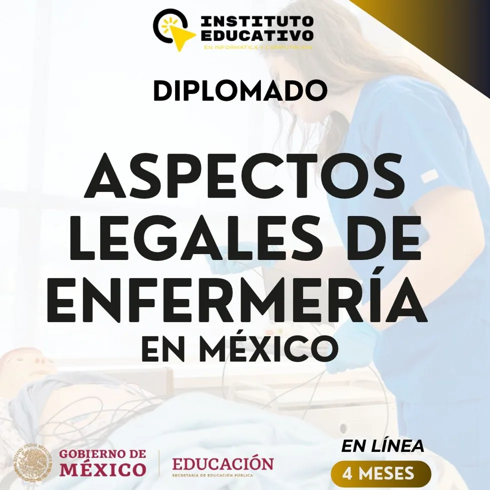

SaludAspectos Legales de la Práctica Independiente de Enfermería en México
Objetivo
Analizar el marco jurídico de la práctica independiente de enfermería en México, los requisitos para establecer y operar consultorios, los alcances y límites de la prescripción de medicamentos y las responsabilidades éticas y legales, para brindar una atención segura y apegada a la normatividad.
Dirigido a
Profesionales de la salud, personal de enfermería, médicos y estudiantes de carreras relacionadas con la salud.
Duración: 4 meses.Modalidad: En línea
Valor curricular
Ver resumen del plan de estudio (PDF)
Diploma digital que acredita 220 horas curriculares y 14 créditos académicos, al concluir satisfactoriamente el diplomado. Se envía por correo electrónico.